How to use it
사용 설명서
A friendly handbook to walk you through.
처음부터 끝까지, 친절한 안내서.
1. Quick start
1. 퀵 스타트


- Open any regular web page (not
chrome://, not the new-tab page). - Click the Manuscript icon and hit New Manuscript.
- A floating panel appears top-right of the page. The page's theme color and fonts auto-populate the palette.
- Click the panel title to rename your manuscript (e.g. "Checkout walkthrough").
- Click the picker on a step card → hover the page → click the target element.
- Use the toolbar buttons (, shapes, freedraw) to layer annotations.
- Hit to replay. Use ← → Space Esc.
- 일반 웹 페이지를 엽니다 (
chrome://·새 탭 페이지에서는 동작하지 않아요). - Manuscript 아이콘을 클릭하고 새 매뉴스크립트를 누르세요.
- 페이지 오른쪽 위에 작성 패널이 나타납니다. 페이지의 테마 색과 글꼴이 자동으로 팔레트에 들어와요.
- 패널 제목을 클릭해 이름을 바꿔 보세요 (예: "결제 페이지 가이드").
- 단계 카드의 선택 도구 를 누른 뒤 페이지에서 원하는 부분에 마우스를 올리고 클릭하세요.
- 상단 주석 도구(, 도형, 손그림)로 설명을 덧붙입니다.
- 로 재생. 단축키 ← → Space Esc.


2. Picking elements
2. 요소 선택
When you pick an element, Manuscript writes down three different ways to find that same spot later. First, any internal name tag the page already attaches to it. Second, the words visible on the element together with where it sits on the page. Third, the location on the screen and the text right around it. If the page changes later, Manuscript tries each clue in turn until one of them lands on the right spot.
요소를 한 번 고르면 Manuscript 는 그 자리를 다시 찾기 위한 단서 세 가지를 적어 둡니다. 첫째 — 페이지가 그 요소에 붙여 둔 내부 이름표. 둘째 — 화면에 보이는 글자와 그 주변 위치. 셋째 — 화면 안에서의 위치와 근처에 있는 글자들. 나중에 페이지가 조금 바뀌어도 Manuscript 는 이 세 단서를 차례로 시도해 같은 자리를 다시 찾아냅니다.
Pages inside pages (iframe, one level deep): If the inner page comes from the same website, picking and playback both work. If it comes from a different website, the first click still registers, but the browser locks Manuscript out at playback time so that step shows a "couldn't find it" message. Pages nested two or more levels deep aren't supported yet.
페이지 안에 들어 있는 또 다른 페이지(iframe, 한 단계 깊이): 안쪽이 같은 사이트라면 선택과 재생 모두 정상으로 동작합니다. 안쪽이 다른 사이트라면 클릭은 등록되지만, 재생할 때 브라우저가 접근을 막아 "요소를 찾지 못했어요" 라는 안내가 뜹니다. 두 단계 이상 깊게 들어간 페이지는 아직 지원하지 않습니다.


Edit the ring & the dim background
강조 테두리·어두운 배경 편집
Once a step has a picked element, the spotlight draws a colored ring around the target and dims everything else. Both are per-step. Click the ring (the colored outline, not the inside) and a Spotlight popup opens — same swatch + slider model as the annotation property popup.
단계에 요소가 선택되어 있으면 강조 표시가 그 요소 둘레에 색 테두리를 그리고 나머지 페이지는 어둡게 처리합니다. 둘 다 단계 단위로 설정돼요. 테두리(요소 둘레의 색 띠)를 클릭 하면 강조 표시 속성 창이 열립니다 — 주석 속성 창과 같은 색 견본 + 슬라이더 구성이에요.


- Muted / Vibrant toggle — same swatch set as the annotation editor, so the ring color stays in tone with annotations on the same step.
- Ring color — 8 swatches in the current swatch mode. Default is the theme's primary blue (
oklch(0.42 0.09 250)). - Width slider — 0 to 12 px. Default 3 px. Set to 0 to hide the ring while keeping the dim.
- Dim color — same 8 swatches. Default black (
#000000). The page outside the spotlight rect tints with this color. - Opacity slider — 0 to 100 %. Default 55 %.
- Reset to default — clears the step's
spotlightfield. The spotlight falls back to the extension's hardcoded defaults. - or click outside — closes the popup. Changes save as you edit; no separate apply step.
- Muted / Vibrant 토글 — 주석 편집기와 같은 색 견본 묶음이라서, 테두리 색이 같은 단계의 주석과 자연스럽게 어울립니다.
- 테두리 색 — 현재 모드의 색 견본 8 개. 기본값은 테마의 주 색(파랑).
- 굵기 슬라이더 — 0 ~ 12 px. 기본 3 px. 0 으로 두면 테두리는 사라지고 어두운 배경만 남습니다.
- 어두운 배경 색 — 같은 색 견본 8 개. 기본은 검정. 강조된 영역 바깥쪽 페이지가 이 색으로 덮입니다.
- 투명도 슬라이더 — 0 ~ 100 %. 기본 55 %.
- 기본값 복원 — 그 단계의 강조 표시 설정을 비웁니다. 비워두면 기본 스타일로 자동으로 그려져요.
- 또는 창 바깥 클릭 — 닫기. 변경은 그 자리에서 저장되며 별도의 적용 버튼은 없습니다.
Per-step, not global. Spotlight style is stored
on each Step (Step.spotlight). To keep
one tone across the whole manuscript, set the first step's
spotlight and copy the values into the others — there's no
global "apply to all" yet.
단계마다 따로 저장됩니다. 강조 표시 스타일은 단계 단위로 저장되기 때문에, 매뉴스크립트 전체에 같은 톤을 입히고 싶다면 첫 단계의 값을 다른 단계에 똑같이 맞춰 두세요. 아직 "모든 단계에 한꺼번에 적용" 옵션은 없습니다.
Authoring-only. The popup opens during authoring. During replay the ring click passes through so it doesn't interfere with action steps or page interactions.
편집 중에만 열립니다. 이 속성 창은 매뉴스크립트를 만들고 있을 때만 열려요. 재생 중에는 테두리 클릭이 그대로 통과돼 사용자가 페이지를 누르는 동작이나 액션 단계의 흐름을 방해하지 않습니다.
3. Annotation tools
3. 주석 도구
The palette across the top of the panel — labelled Annotation tools — holds three kinds: text, shape (8 sub-kinds: rectangle, ellipse, triangle, diamond, star, callout, line, block arrow), and freedraw (hand-drawn via rough.js). Click any annotation on the page to open its property popup.
패널 상단의 주석 도구 영역에 세 종류가 있습니다 — 글상자, 도형 (사각형·타원·삼각형·마름모·별·콜아웃·선·블록 화살표 8가지), 손그림 (rough.js). 페이지에 그려진 주석을 클릭하면 그 자리에 속성 popup이 열립니다.
Property popup
속성 창
- Color — 8 swatches + site-extracted colors + custom picker.
- Muted / Vibrant toggle — swaps the 8-swatch palette without changing the UI palette.
- Font — site fonts first, then base fonts. With Asta Sans as a fallback so the font survives a page-context move.
- Effect — Fade / Slide / Bounce / Zoom / Rotate 2× as an entry animation.
- Opacity slider — separate for stroke, fill, text background.
- 색상 — 색 견본 8 개 + 사이트에서 추출한 색 + 직접 색 고르기.
- Muted / Vibrant 토글 — 패널 자체 색은 그대로 두고 색 견본 묶음만 두 톤으로 전환합니다.
- 글꼴 — 사이트 글꼴이 먼저 나오고, 그다음 기본 글꼴. Asta Sans 가 예비 글꼴로 들어가 있어 페이지가 바뀌어도 글꼴이 유지돼요.
- 등장 효과 — Fade / Slide / Bounce / Zoom / Rotate 2× 중 선택할 수 있습니다.
- 투명도 슬라이더 — 선 / 채움 / 글상자 배경 각각 따로 조절합니다.


Per-step annotation list
스텝별 주석 목록
Every step card now opens an Annotation tools (N) section that lists every text box, shape, and drawing on that step. Each row carries a small preview that reflects the actual colors and shape kind, so you can spot the right one at a glance.
단계 카드마다 주석 도구 (N) 영역이 열려 그 단계에 그려진 모든 글상자·도형·손그림을 한 줄씩 보여줍니다. 각 항목 옆 작은 미리보기에 실제 색과 도형 종류가 그대로 반영되어 한눈에 어느 항목인지 알아볼 수 있어요.
- Click a row — opens that annotation's property panel. If the annotation belongs to another step, the panel switches step automatically. If it lives on another page, that page loads and the annotation is selected when it's ready.
- Trash icon — removes the annotation from the step.
- Header click — folds the list. The Inner flow section right above folds the same way.
- 항목 클릭 — 해당 주석의 속성 패널이 열립니다. 다른 단계의 주석이면 단계가 함께 전환되고, 다른 페이지의 주석이면 그 페이지를 자동으로 불러와 선택해 줍니다.
- 휴지통 아이콘 — 단계에서 해당 주석을 삭제합니다.
- 머리글 클릭 — 목록을 접습니다. 바로 위의 내부 흐름 영역도 같은 방식으로 접고 펼 수 있어요.
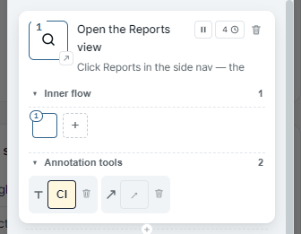
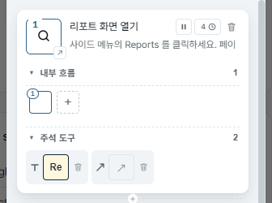
Resize, rotate, animate
크기 조절·회전·애니메이션
Click an annotation to reveal handles. Corner drag = resize, top = rotate, bottom-left = delete. Rotation + animation combine, the annotation lands at the chosen angle.
주석을 클릭하면 모서리 손잡이가 나타납니다. 모서리를 드래그하면 크기 조절, 상단의 로 회전, 좌측 아래의 로 삭제. 회전과 등장 효과가 결합되어 최종 각도로 자연스럽게 안착합니다.
Undo & redo NEW v0.8.0
되돌리기·다시 실행 NEW v0.8.0
Any edit you make in the panel — a color, a move, a delete, applying formatting — can be stepped back. Press CtrlZ to undo and CtrlShiftZ to redo, or use the buttons next to the theme toggle in the panel header. Moving between steps doesn't count as an edit. If you undo while you're on a different step, Manuscript jumps back to the step where the change happened so you see it revert.
작성 패널에서 한 편집 — 색, 이동, 삭제, 서식 적용 — 은 한 단계씩 되돌릴 수 있어요. CtrlZ 로 되돌리기, CtrlShiftZ 로 다시 실행, 또는 패널 머리글의 테마 버튼 옆 버튼을 쓰세요. 단계 사이를 오가는 건 편집으로 치지 않습니다. 다른 단계에 있을 때 되돌리면, 변경이 일어난 단계로 먼저 이동해 되돌려지는 모습을 보여줘요.

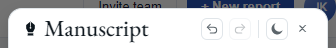
Copy formatting NEW v0.8.0
서식 복사 NEW v0.8.0
Spent time styling one annotation and want the rest to match? Open its property popup and click the brush button to the left of the Muted / Vibrant toggle. A small menu drops down: This step only copies the style onto the same kind of annotation on this step; All steps does it across the whole manuscript. Position, size, and wording stay as they are — only the look is copied. The spotlight has the same brush button to match every step's highlight at once.
주석 하나를 공들여 꾸몄고 나머지도 똑같이 맞추고 싶다면, 그 주석의 속성 창을 열고 Muted / Vibrant 토글 왼쪽의 붓 버튼을 누르세요. 작은 메뉴가 펼쳐집니다 — 이 스텝만 은 이 스텝의 같은 종류 주석에, 전체 스텝 은 매뉴스크립트 전체에 스타일을 입힙니다. 위치·크기·문구는 그대로 두고 모양만 복사돼요. 강조 표시에도 같은 붓 버튼이 있어 모든 단계의 강조를 한 번에 맞출 수 있습니다.
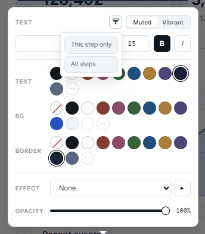
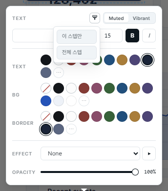
Copy & paste annotations NEW v0.8.0
주석 복사·붙여넣기 NEW v0.8.0
Select an annotation and press CtrlC, then CtrlV to paste a copy. Paste into the same step and each copy steps a little down and to the right so it doesn't sit on top of the original. Paste into another step and it lands at the same spot on the screen. The pasted copy is selected right away, so its property popup is open and ready to edit.
주석을 고르고 CtrlC, 이어서 CtrlV 로 복제합니다. 같은 스텝 에 붙이면 원본 위에 겹치지 않도록 조금씩 우하단으로 어긋나 놓이고, 다른 스텝 에 붙이면 화면의 같은 위치에 놓여요. 붙인 주석은 곧바로 선택돼 속성 창이 열린 채라 바로 편집할 수 있습니다.
4. Steps & reorder
4. 스텝과 재배치
- Insert between — small between cards.
- Append — large at the bottom.
- Reorder — drag a step card to move it.
- Spotlight a step — click the card. The page auto-scrolls to the picked element and shows the spotlight.
- Title & description — both editable directly on the card. Description doubles as the presenter note and is read aloud during replay.
- Timer chip — click the seconds value on the top-right to set auto-advance.
- Action toggle — the icon on the top-right switches the step between auto-advance and wait-for-user-click.
- Inner flow & Annotation tools — two collapsible sections at the bottom of the card. Click a header to fold or unfold; see §3 (Annotation tools) and §5 (Inner flow) for details.
- 스텝 사이 삽입 — 카드 사이 작은 .
- 끝에 추가 — 하단 큰 .
- 순서 변경 — 스텝 카드를 드래그.
- 스텝 spotlight — 카드 클릭. 페이지가 해당 요소로 자동 스크롤되고 spotlight 표시.
- 제목 · 설명 — 카드에서 직접 편집 가능. 설명은 발표자 노트로 쓰이고 재생 중 음성으로 읽힙니다.
- 타이머 chip — 카드 우상단 초 단위 값을 클릭해 자동 진행 시간 설정.
- action 토글 — 우상단 아이콘으로 자동 진행과 클릭 대기를 전환.
- 내부 흐름 · 주석 도구 — 카드 하단의 두 영역. 머리글 클릭으로 접고 펼 수 있습니다. 자세한 동작은 §3 (주석 도구) 와 §5 (내부 흐름) 참고.


5. Inner flow
5. 내부 흐름
A single step can spotlight a row of related items in sequence while the same description plays — toolbar buttons, feature cards, form fields. The first element you pick is the main one; extra elements join the step's Inner flow section below the card and are visited one by one during replay with smooth transitions.
하나의 단계가 여러 요소를 순서대로 비춥니다 — 툴바 버튼, 카드 묶음, 폼 필드 같은 묶음. 처음 picker 로 잡은 게 대표 요소이고, 추가 요소는 단계 카드 아래 내부 흐름 영역에 줄지어 추가되어 재생 시 부드러운 전환으로 하나씩 강조됩니다. 단계의 설명이 읽히는 동안 움직여요.
Adding sub-elements
내부 요소 추가
- Below the step card, click the dashed + at the right end of the sub track. The picker turns on — click an element on the page to add it as a sub.
- Subs have to live on the same page as the primary. If you've navigated to a different page, the picker refuses. Either go back to the original page, or rebuild the step from the right page.
- When you add a new sub, the step's remaining time is split evenly across the primary and every sub.
- 단계 카드 아래 내부 흐름 줄 오른쪽 끝의 점선 + 를 누르면 선택 모드가 켜집니다 — 페이지에서 원하는 부분을 클릭하면 그 자리에 추가됩니다.
- 내부 요소는 대표 요소와 같은 페이지에서만 선택할 수 있습니다. 다른 페이지로 이동한 상태라면 선택이 거부돼요. 원래 페이지로 돌아가거나, 맞는 페이지에서 단계를 새로 만드세요.
- 새 요소를 추가하면 단계의 남은 시간이 대표 요소와 추가된 모든 내부 요소에 똑같이 나눠집니다.


Numbered badges & replay order
번호 뱃지와 재생 순서
Each node in the sequence wears a circle badge: primary = 1, first sub = 2, second sub = 3, … The badge is the order the spotlight visits during replay. Smooth interpolated transitions (350 ms, ease-in-out-cubic) carry the spotlight from one node to the next.
각 요소에 동그라미 번호 배지가 붙습니다 — 대표 요소가 1, 첫 내부 요소가 2, 두 번째 내부 요소가 3 … 식이에요. 재생할 때 강조 표시가 이 번호 순서대로 옮겨갑니다. 요소 사이의 전환은 0.35 초 동안 부드럽게 흘러가요.
Timing model
시간 모델
- The step's total time stays the same. The time spent on each node (primary + every sub) adds up to the step's auto-advance seconds. The auto-advance value is the reference; everything else fits inside it.
- Drag a gap label (the marker between two nodes) to change how the time is split. The label slows down a touch so you can land it precisely; the other gaps stretch or shrink in proportion so the total doesn't change.
- No node goes under 100 ms. Even the shortest step stays on each element for at least that long.
- Voice narration runs separately. The step's description is read aloud once over the whole sub sequence, and the step waits for whichever finishes last — narration or the last sub.
- 단계 전체 시간은 그대로 유지됩니다. 각 요소에 머무는 시간을 다 더하면 단계의 자동 진행 시간과 같아요. 자동 진행 값이 기준이고, 그 안에서 요소마다 나눠 갖습니다.
- 요소 사이의 시간 라벨을 드래그하면 시간 배분이 바뀝니다. 라벨이 미세하게 따라오도록 살짝 제한이 걸려 있어 원하는 값에 정확히 멈출 수 있고, 다른 시간은 그만큼 비례해 늘거나 줄어 전체 시간은 그대로 유지됩니다.
- 한 요소의 최소 시간은 0.1 초. 가장 짧게 잡아도 그만큼은 머무릅니다.
- 음성 안내는 별도로 흐릅니다. 단계 설명은 내부 흐름 전체에 걸쳐 한 번 읽히고, 음성과 마지막 요소 중 늦게 끝나는 쪽까지 기다린 다음 다음 단계로 넘어갑니다.
Time-shift — pull a sub earlier / push later
시간 이동 — 요소를 앞당기거나 늦추기
When a sub is selected, two small chevron buttons appear at its bottom corners — ‹ pulls it 0.1 s earlier, › pushes it 0.1 s later. Keyboard equivalents: ← / →. The buttons appear on hover (and while a sub is selected), so they don't clutter the track when you're not adjusting timing.
내부 요소를 선택하면 그 아래 양쪽 모서리에 작은 화살표 버튼이 나타납니다 — ‹ 누르면 0.1 초 앞당기기, › 누르면 0.1 초 늦추기. 키보드로는 ← / → 로도 같은 동작이 됩니다. 버튼은 요소 위에 마우스를 올렸거나 선택된 상태일 때만 나타나서 평소엔 화면이 어수선하지 않아요.
- One sub selected — only the gap just before it shrinks or grows. The sub plays for the same length of time, just earlier or later in the sequence.
- A connected run selected — the whole run moves together. Gaps inside the run don't change.
- The whole track selected — the same rule applies to the time at the start (primary) and the time at the end (last sub).
- Nothing happens if a 0.1 s shift would squeeze any gap below 100 ms. Either select fewer items, or stretch the step's overall time.
- 요소 하나 선택 — 그 요소 바로 앞 시간만 줄거나 늘어납니다. 요소 자체가 화면에 머무는 길이는 그대로이고, 단계 안에서 시작 시각만 앞이나 뒤로 옮겨가요.
- 붙어 있는 여러 요소 선택 — 묶음 전체가 함께 이동합니다. 묶음 안쪽 시간은 변하지 않아요.
- 전체 선택 — 시작(대표 요소가 머무는 시간) 과 끝(마지막 내부 요소가 머무는 시간) 양쪽에 같은 규칙이 적용됩니다.
- 0.1 초 이동했을 때 어느 시간이라도 0.1 초 아래로 떨어지면 아무 변화도 일어나지 않습니다. 선택을 줄이거나, 단계 전체 시간을 늘려주세요.


Multi-select & deletion
다중 선택과 삭제
- Click a sub — select just that one and move the spotlight to that element.
- Ctrl / Cmd + click — add or remove this sub from the current selection.
- Shift + click — select the range from the last clicked sub to this one.
- Esc or click outside the sub track — clear the selection.
- Click the primary thumbnail (badge 1) — selects the primary instead of a sub and moves the spotlight back to it.
- Delete / Backspace while subs are selected — removes them all. The remaining gaps share out the freed time so the step's total stays the same. If you're typing into a step name, description, or the panel title, the key is left alone so your typing isn't interrupted.
- 클릭 — 내부 요소 하나만 선택하고 강조 표시가 그 요소로 이동합니다.
- Ctrl / Cmd + 클릭 — 클릭한 요소를 현재 선택에 더하거나 빼기.
- Shift + 클릭 — 마지막으로 클릭한 요소부터 이번 요소까지 범위 선택.
- Esc 또는 줄 바깥을 클릭 — 선택 해제.
- 대표 썸네일(1번 배지) 클릭 — 내부 요소 대신 대표 요소가 선택되고 강조 표시가 그쪽으로 돌아갑니다.
- Delete / Backspace — 선택된 내부 요소가 모두 삭제됩니다. 남은 요소들이 비워진 시간을 나눠 가져 단계 전체 시간은 그대로 유지돼요. 단계 이름·설명·패널 제목에 글을 입력 중일 때는 이 키가 그대로 입력에 쓰여 작성에 방해되지 않습니다.
Reorder
재배치
Drag and drop with insert-between behavior. Drop on the left half of a sub to slip in before it, on the right half to slip in after. The gap labels between subs work as drop spots too, and a thin vertical bar shows you exactly where the sub will land while you're dragging. If you drag a sub that's part of the current selection, the whole selected group moves together and keeps its order; dragging a sub that's not selected moves just that one.
드래그 & 드롭 — 사이에 끼워 넣기 방식으로 동작합니다. sub 의 왼쪽 절반에 떨구면 그 앞에, 오른쪽 절반에 떨구면 그 뒤에 끼워집니다. sub 사이의 간격 라벨도 떨굴 수 있는 자리이며, 드래그하는 동안 얇은 세로 막대가 sub 가 정확히 어디에 들어갈지 미리 보여줍니다. 현재 선택에 포함된 sub 를 드래그하면 선택 묶음 전체가 순서를 유지한 채 함께 이동하고, 선택되지 않은 sub 를 드래그하면 그 sub 하나만 이동합니다.
Action steps + subs
Action 스텝과 sub 의 조합
When a step is an action step (wait for click) and also has sub-elements, the sub sequence plays through to the end first. After the last sub finishes its time on screen, the click-wait kicks in on the last sub's element — that's where the user clicks to advance to the next step.
스텝이 action 스텝 (클릭 대기) 이면서 sub 도 가지고 있으면, sub 시퀀스가 끝까지 재생된 다음 마지막 sub 요소에서 action 대기가 시작됩니다. 사용자는 마지막 sub 요소 를 클릭해서 다음 스텝으로 넘어갑니다.
Replay notes
재생 시 참고
- Page scroll during transition is fine — the end rect is recomputed each frame so the spotlight tracks the real DOM position.
- A sub that fails to resolve on the page is skipped with a warn — only the primary failing triggers the not-found recovery modal.
- 전환 중 페이지 스크롤은 OK — 종료 rect 를 매 프레임 다시 계산해서 실제 DOM 위치를 따라갑니다.
- sub 가 페이지에서 못 찾아지면 그 sub 만 건너뜁니다 (경고 표시) — primary 가 실패할 때만 not-found 복구 모달이 뜹니다.
6. Action steps
6. action 스텝
Turn a step into an action by clicking the pause icon on the card. During replay, an "Click or type in this area" bubble appears on the target element and auto-advance pauses until the user interacts. If the click navigates to a new URL, Manuscript resumes the manuscript on the new page automatically.
카드의 일시정지 아이콘 을 클릭하면 그 스텝이 action 스텝으로 바뀝니다. 재생 중 대상 요소에 "이 영역을 클릭하거나 입력하세요" 버블이 뜨고 자동 진행이 멈춥니다. 사용자가 클릭해서 다른 URL로 이동해도 새 페이지에서 시연이 자동 재개됩니다.


7. Replay & prompter
7. 재생과 프롬프터
Hit in the panel footer. A translucent control bar appears at the bottom — it gets a touch darker when you hover over it, and it remembers where you dragged it, even after the page navigates. The progress strip floats just above the control bar.
패널 하단의 로 재생을 시작합니다. 반투명 컨트롤 바가 하단에 나타나고, 마우스를 올리면 살짝 진해집니다. 드래그로 위치를 옮기면 페이지가 이동해도 그 위치 그대로 유지돼요. 진행 표시줄은 컨트롤 바 바로 위에 떠 있습니다.
Keyboard
키보드
- ← / → — previous / next step
- Space — pause / resume
- Esc — exit replay
- ← / → — 이전 / 다음 스텝
- Space — 일시정지 / 재개
- Esc — 재생 종료
Detached prompter
발표자 노트 분리
The prompter button in the panel's footer opens a separate browser window with a 3-column layout — step list on the left, the current step in the middle, the next one on the right. Same keyboard shortcuts as the panel, so you can drive the tour from a second screen.
패널 하단의 프롬프터 버튼을 누르면 별도 브라우저 창이 열립니다. 왼쪽에는 스텝 목록, 가운데에는 현재 스텝, 오른쪽에는 다음 스텝이 보이는 3 열 구조예요. 패널과 같은 단축키를 쓰니 두 번째 모니터에서 편하게 진행할 수 있습니다.


Voice narration
음성 안내
Toggle the speaker icon on the control bar (or in the prompter window's footer). Step descriptions are read out loud by the browser's built-in voice. Pick a voice in the panel's gear settings. Auto-advance waits for the narration to finish before moving on.
컨트롤 바(또는 프롬프터 창 하단)의 스피커 아이콘으로 켜고 끕니다. 스텝 설명을 브라우저 내장 음성으로 읽어 주고, 사용할 목소리는 패널의 기어(설정) 메뉴에서 고를 수 있어요. 자동 진행은 음성이 끝날 때까지 기다린 다음 다음 스텝으로 넘어갑니다.
If the speaker turns orange: browsers won't play sound on a page until someone has interacted with it. So on a page the tour advances to on its own (auto-advance across pages), narration can't start until you click — the speaker goes orange and muted, with a "click anywhere for sound" hint bouncing above it. Click anywhere on the page and narration begins. (The prompter window shows the same hint, pointing you to click the demo page.) Pages you advance yourself by clicking keep sound flowing without this. It applies whether you replay in the extension or the standalone player — so for a hands-free multi-page tour, expect to click once on each page the tour opens on its own.
스피커가 주황색으로 바뀌면: 브라우저는 누군가 페이지를 한 번 건드리기 전까지 소리를 재생하지 않습니다. 그래서 투어가 스스로 넘어가서(페이지 간 자동 진행) 연 페이지에서는 클릭 전까지 음성이 시작되지 못해요 — 스피커가 주황색 음소거 상태가 되고, 그 위에 "아무 곳이나 클릭하세요" 안내가 통통 튑니다. 페이지 아무 곳이나 한 번 클릭하면 음성이 시작됩니다. (프롬프터 창에도 같은 안내가 떠서 재생 화면을 클릭하라고 알려 줘요.) 직접 클릭해서 넘긴 페이지는 이런 과정 없이 소리가 이어집니다. 확장에서 재생하든 독립 플레이어로 재생하든 동일하게 적용되므로, 핸드프리 멀티 페이지 투어라면 투어가 스스로 연 페이지마다 한 번씩 클릭이 필요합니다.
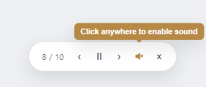
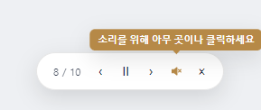
Matching pages with a query or hash
쿼리·해시가 있는 페이지 알아보기
When you play a manuscript, Manuscript checks that you're on
the right page by its web address. Normally it looks only at
the main address and ignores everything after the
? or # — that way a tracking link
like ?utm_source=email never makes it think
you're on the wrong page.
매뉴스크립트를 재생할 때 Manuscript 는 웹 주소를 보고 지금
맞는 페이지인지 확인합니다. 평소에는 주소의 본체만 보고
? 나 # 뒤쪽은 무시해요. 그래야
?utm_source=email 같은 추적용 링크 때문에 엉뚱한
페이지로 오해하지 않거든요.
But some sites switch what's on screen using exactly that
part — think ?tab=billing or a
#/reports address. On those, every step can share
the same main address while the screen is completely
different, so playback could start on the wrong view or stop
moving between steps. The fix: open the
gear settings in the panel footer and turn on
Match full URL (query & hash). Manuscript
then treats those addresses as different pages, so the
wrong-page warning and the automatic jumps between steps work
the way you'd expect. Leave it off for ordinary sites.
그런데 어떤 사이트는 바로 그 뒷부분으로 화면을 바꿉니다 —
?tab=billing 이나 #/reports 같은
주소처럼요. 이런 사이트는 단계마다 주소 본체는 같은데 화면은
전혀 다를 수 있어서, 재생이 엉뚱한 화면에서 시작하거나 단계
사이를 못 넘어갈 수 있어요. 이럴 땐 패널 하단의
기어(설정) 메뉴를 열고 전체 URL 일치 (쿼리·해시)
를 켜세요. 그러면 Manuscript 가 그 주소들을 서로 다른 페이지로
보고, 페이지가 다르다는 경고와 단계 사이 자동 이동이 제대로
동작합니다. 일반 사이트에서는 꺼 두면 됩니다.
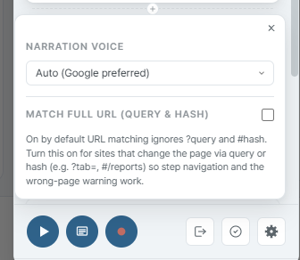
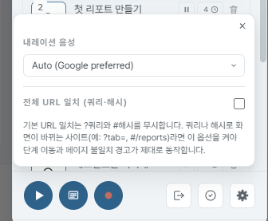
Edit a step from the prompter
발표자 창에서 단계 편집
While the prompter is paused, the current step card in the middle column doubles as a light editor. Click any field below, type, then click away — the change saves on the spot. Pressing play after an edit rewinds that step so the timer, the highlight walk, and the spoken narration all start over with the new content.
발표자 창이 일시정지 상태일 때는 가운데 단계 카드가 가벼운 편집기 역할을 합니다. 아래 항목을 클릭해 입력한 뒤 다른 곳을 클릭하면 자동 저장돼요. 편집 후 재생 버튼을 누르면 그 단계가 처음으로 돌아가 타이머·강조 표시·음성 안내가 모두 새 내용으로 다시 시작됩니다.
- Title and description — click the text and type. Tab moves between fields, click away to save.
- Action toggle — the small badge next to the timer switches the step between auto-advance and wait-for-click.
- Step timer — click the 9.5s badge and type a new number. The number is pre-selected so you can replace it in one keystroke.
- Each inner element's screen time — if the step walks through inner-flow elements, they stack vertically under the main thumbnail with each duration underneath. Click one to select it, then ← / → nudges its time by 0.1 seconds. The step's total length stays the same. Press Esc to clear the selection.
- 제목과 설명 — 글자를 클릭하고 바로 입력. Tab 으로 다음 칸 이동, 다른 곳을 클릭하면 저장.
- 액션 토글 — 타이머 옆 작은 배지로 자동 진행 ↔ 클릭 대기를 전환합니다.
- 단계 타이머 — 9.5s 배지를 클릭하고 새 숫자를 입력하세요. 들어가면 숫자가 선택돼 있어 그대로 새 값을 입력하면 됩니다.
- 각 내부 요소가 화면에 머무는 시간 — 단계가 여러 요소를 순서대로 보여주는 경우, 발표자 창에 대표 썸네일 아래로 요소들이 세로로 쌓이고 각 요소 아래에 머무는 시간이 표시됩니다. 한 요소를 클릭해 선택한 뒤 ← / → 키로 0.1 초씩 조절하세요. 단계 전체 시간은 그대로 유지됩니다. Esc 키로 선택을 해제할 수 있어요.
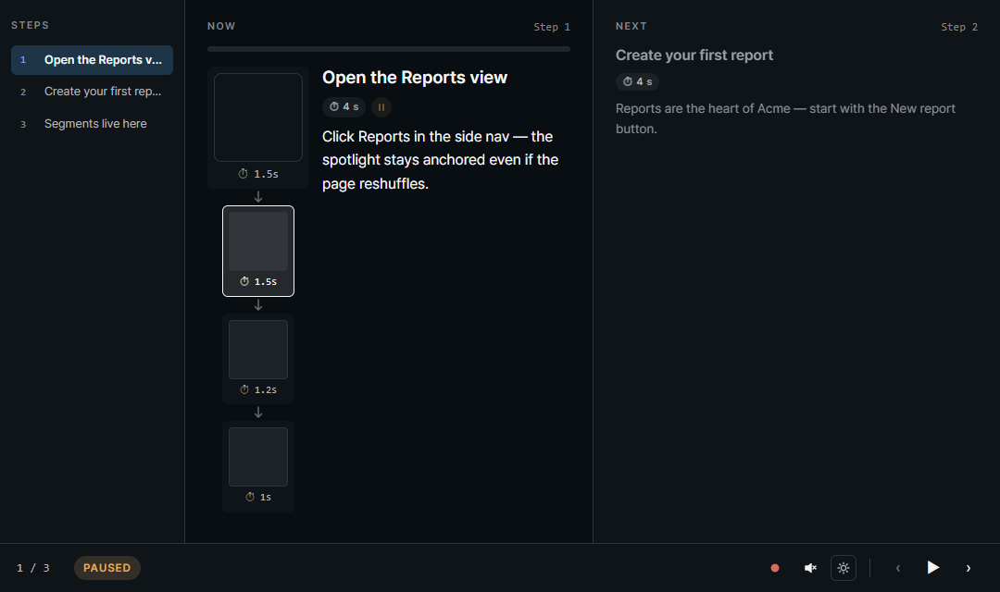
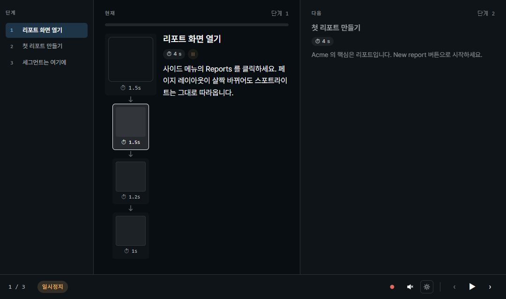
Paused only. The editor opens while the prompter is paused. Press play after an edit to replay that step from the top with the new copy.
일시정지 상태에서만. 편집기는 발표자 창이 일시정지 상태일 때 열립니다. 편집 후 재생 버튼을 누르면 그 단계가 새 내용으로 처음부터 다시 재생돼요.
8. Recording
8. 녹화
The red button in the panel footer turns your tour into a video file. A separate recorder window opens to run it — it plays the whole tour by itself, keeps every Manuscript control off the page, and captures the voice narration along with everything on screen. It even keeps recording when your tour moves between pages, so a multi-page tour comes out as one continuous video. When the last step finishes it stops on its own and hands you the file through the browser's normal save dialog.
패널 아래쪽의 빨간 버튼이 만들어 둔 시연을 동영상으로 만들어 줍니다. 녹화를 진행하는 별도의 녹화 창이 열려요 — 시연을 스스로 끝까지 재생하면서, Manuscript 도구는 페이지에 내보내지 않고, 화면에 보이는 것과 음성 안내를 함께 담습니다. 시연이 여러 페이지를 오가도 녹화가 끊기지 않아서, 여러 페이지짜리 시연도 하나의 영상으로 이어져요. 마지막 단계가 끝나면 알아서 멈추고, 브라우저의 저장 다이얼로그로 파일을 건네줍니다.
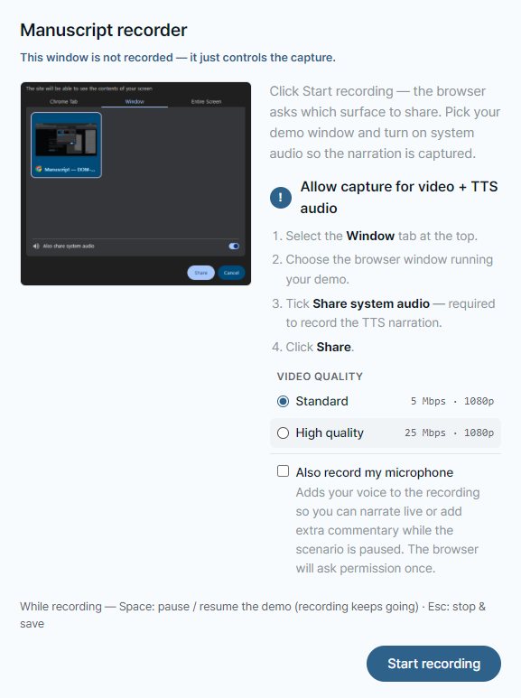
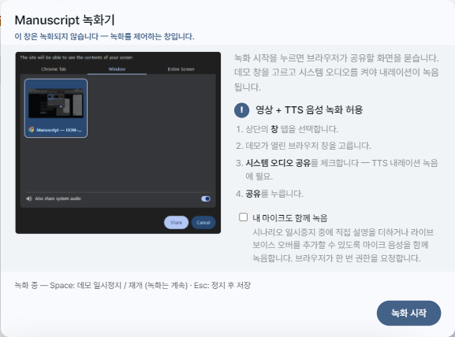
How to record
녹화 방법
- Click the red in the panel footer.
- A small recorder window opens — it runs the recording and shows your script (the current and next step) as it plays. This window itself is never in the video. Pick the video quality — Standard suits most tours; choose High quality for crisper text (the file gets larger). Want your voice in there too? Turn on Also record my microphone, then click Start recording.
- The browser asks what to share. Pick a Window — your browser window, not a single tab — tick Also share system audio, then Share. That's what carries the voice narration into the video; skip it and the recording still runs, just silent.
- Your page jumps to fullscreen and a 3-2-1 countdown gives you a moment to get ready, then recording begins. The panel and control bar are already out of the frame.
- The tour plays itself. The recorder window keeps a red dot blinking the whole time so you can tell it's rolling. Tap Space to pause the tour (the recording keeps going); press Esc when you want to wrap up and save. It also stops on its own when the last step finishes.
- The browser's save dialog opens with a filename like
manuscript-recording-YYYYMMDD-HHMM.webm.
- 패널 하단의 빨간 버튼을 클릭합니다.
- 작은 녹화 창이 열립니다 — 녹화를 진행하고, 재생되는 대로 대본(현재·다음 단계)을 보여줘요. 이 창 자체는 영상에 들어가지 않습니다. 영상 화질을 고르세요 — 대부분 일반 화질로 충분하고, 글자를 더 또렷하게 담고 싶으면 고화질을 고르면 됩니다(파일이 커져요). 내 목소리도 함께 담고 싶으면 내 목소리도 함께 녹음을 켜고 녹화 시작을 누르세요.
- 브라우저가 무엇을 공유할지 물어봅니다. 탭 하나가 아니라 창(Window) — 내 브라우저 창 — 을 고르고 시스템 오디오 공유를 체크한 뒤 공유를 누르세요. 음성 안내가 여기서 영상에 함께 담깁니다. 건너뛰면 녹화는 되지만 소리는 빠져요.
- 페이지가 전체 화면으로 바뀌고 3·2·1 카운트다운으로 잠깐 준비할 틈을 준 뒤 녹화가 시작됩니다. 패널과 컨트롤 바는 이미 화면 밖으로 빠져 있어요.
- 시연이 알아서 재생됩니다. 녹화 창에서는 빨간 점이 계속 깜빡여서 녹화 중이라는 걸 알 수 있어요. Space 로 시연을 잠깐 멈출 수 있고(녹화는 계속됩니다), 끝내고 저장하려면 Esc 를 누르세요. 마지막 단계가 끝나면 알아서 멈춥니다.
manuscript-recording-YYYYMMDD-HHMM.webm형태의 파일명으로 브라우저 저장 다이얼로그가 열립니다.
Multi-page tours record in one take
여러 페이지 시연도 한 번에
If your tour walks across several pages, the recording follows along through every page change and stitches it all into a single video — no stopping and restarting for each page. Build your tour as usual and hit record; the recorder window stays open through the moves and keeps the take going.
여러 페이지를 오가는 시연이라면, 페이지가 바뀔 때마다 녹화가 따라가면서 전부 하나의 영상으로 이어 붙입니다 — 페이지마다 멈췄다 다시 시작할 필요가 없어요. 평소처럼 시연을 만들고 녹화만 누르면, 페이지를 이동하는 동안에도 녹화 창이 그대로 열려 있으면서 녹화를 계속 이어 갑니다.
Pause anytime to add your voice
잠깐 멈추고 내 목소리 보태기
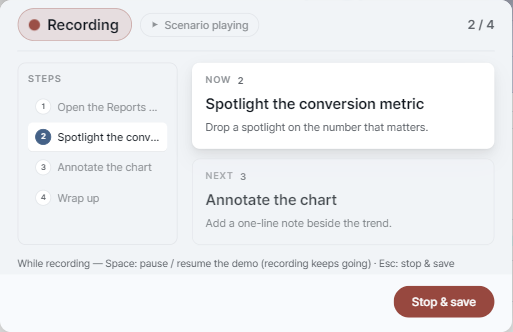
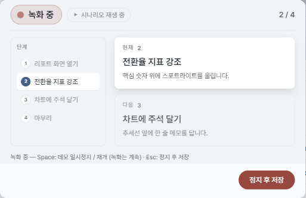
Any time during recording, tap Space and the tour freezes where it is. The page holds still and the recorder window shows it's paused — but the red dot keeps blinking, because the recording never stopped. Now it's your turn: talk through what's on screen (if you turned the mic on), click around to show something interactive, or just catch your breath. Tap Space again and the tour picks up like nothing happened.
녹화 도중 언제든 Space 키를 누르면 시연이 그 자리에 그대로 멈춥니다. 화면은 멈춰 있고 녹화 창에는 일시정지 상태가 표시돼요 — 하지만 빨간 점은 계속 깜빡입니다. 녹화는 멈추지 않았거든요. 이제 내 차례 — 마이크를 켜 뒀다면 화면을 보면서 한마디 보태고, 직접 클릭해서 뭔가 보여주거나, 잠깐 숨을 고르세요. Space 를 다시 누르면 시연이 아무 일도 없었던 것처럼 이어집니다.
Want your voice in too?
내 목소리도 같이 담고 싶다면?
Turn on Also record my microphone in the recorder window before you start (it's off by default). Your voice mixes in alongside the read-aloud narration and the page sounds — everything ends up on one neat audio track. The browser only asks for microphone permission when this is on; the normal recording never bothers you with it.
녹화를 시작하기 전, 녹화 창에서 내 목소리도 함께 녹음을 켜 두세요 (기본은 꺼짐). 내가 말한 내용이 읽어주는 안내·페이지 소리와 함께 하나의 트랙으로 깔끔하게 담깁니다. 이 옵션을 켰을 때만 브라우저가 마이크 권한을 한 번 물어봐요 — 평소 녹화에서는 권한 창이 뜨지 않아요.
Limits & gotchas
제한 & 주의사항
- Share a Window, not a Tab. When the browser asks what to share, pick a Window and turn on "Share system audio" — that's the only way the voice narration makes it into the video. A single tab can't carry the page's sound.
- WebM video file. Most modern players open it just fine — Chrome, Edge, VLC, the built-in Media Player on Windows 11. Older Windows Media Player just needs Microsoft's free Web Media Extensions + VP9 Video Extensions from the Microsoft Store (Windows Update often slips these in for you already). Need an MP4 instead? Run the file through ffmpeg to convert it.
- Tours that play through the embedded launcher on another site can't be recorded. Those are view-only on that site by design — record from your own Manuscript panel instead.
- Browser-internal pages (
chrome://,edge://) and the new-tab page can't be recorded — same browser rule that blocks the rest of Manuscript on those pages.
- 탭 말고 창을 공유하세요. 브라우저가 무엇을 공유할지 물으면 창(Window)을 고르고 "시스템 오디오 공유"를 켜세요 — 음성 안내가 영상에 담기는 유일한 방법이에요. 탭 하나로는 페이지 소리가 담기지 않습니다.
- WebM 동영상 파일. 요즘 플레이어는 대부분 잘 엽니다 — Chrome, Edge, VLC, Windows 11 기본 Media Player 모두 OK. 구형 Windows Media Player 는 Microsoft Store 의 무료 Web Media Extensions + VP9 Video Extensions 가 있으면 재생됩니다 (Windows Update 로 이미 깔려 있는 경우도 많아요). MP4 가 필요하면 ffmpeg 로 변환해서 쓰세요.
- 다른 사이트에 임베드된 런처에서 재생되는 시연은 녹화할 수 없습니다. 그쪽은 보기 전용으로 설계돼 있어요 — 녹화는 본인의 Manuscript 패널에서 진행하세요.
- 브라우저 자체 페이지(
chrome://,edge://) 와 새 탭은 녹화 불가 — Manuscript 의 다른 기능과 동일한 브라우저 정책 때문입니다.
9. Check that steps still match the page
9. 스텝이 페이지와 여전히 맞는지 점검
Pages change over time — internal names get renamed, ids get regenerated, words get rewritten. Validation walks through every step you wrote and tells you, with one of four colors, whether Manuscript can still find the original spot. Open the modal, hit 검증 시작 (Start validation), and every step lights up green / yellow / red one by one. Tours that span multiple pages navigate themselves.
페이지는 시간이 지나면 바뀝니다 — 내부 이름이 바뀌고, 식별자가 새로 생성되고, 글자도 다듬어지죠. 검증은 작성한 모든 스텝을 하나씩 돌려보며, Manuscript 가 원래 자리를 아직 찾아낼 수 있는지 네 가지 색으로 알려줍니다. 모달을 열고 검증 시작 을 누르면 각 스텝이 녹/노/빨로 차례로 표시됩니다. 여러 페이지에 걸친 시연은 자동으로 페이지를 이동합니다.
How to run
실행 방법
- Click the icon in the panel footer.
- A modal opens with every step listed in order, waiting to be checked.
- Hit 검증 시작. Steps on the current page light up one by one as Manuscript finds each spot.
- If the scenario has steps on other pages, the modal shows a Moving to next page… banner, navigates there, and picks the modal back up automatically on the new page.
- After the last page the modal shows 검증 완료 (Validation complete) and the panel takes you back to the scenario's first page so you're back where you started.
- Esc or the in the corner closes the modal at any time.
- 패널 하단의 아이콘을 클릭합니다.
- 모든 스텝이 순서대로 나열된, 아직 점검 전 상태의 모달이 열립니다.
- 검증 시작 을 누르면, 현재 페이지의 스텝들이 Manuscript 가 자리를 찾는 순서대로 색이 채워집니다.
- 다른 페이지에 있는 스텝이 있으면 다음 페이지로 이동 중… 배너가 뜨고 자동으로 이동, 이동한 페이지에서 점검이 자연스럽게 이어집니다.
- 마지막 페이지가 끝나면 검증 완료 상태가 되고, 패널이 시연 1번 페이지로 자동 복귀합니다.
- Esc 또는 모서리 로 언제든 모달을 닫을 수 있습니다.


What the colors mean
색의 의미
- Green — best shape. The page's internal name tag is still in place, and Manuscript found the spot the most reliable way.
- Yellow — recovered another way. The original name tag is gone, but the visible text and what's around it still uniquely point to the spot. Re-pick the step when you have time.
- Red — couldn't find it. The element doesn't exist on this page anymore (or even the location-based guess didn't recover it within 2 seconds). Use the row's 재픽 (Re-pick) action.
- Gray — not checked yet. Either validation hasn't started, or this step is on a page that hasn't been visited in this run.
- 녹색 — 가장 안정. 페이지의 내부 이름표가 그대로 있고, 가장 튼튼한 방법으로 자리를 찾았습니다.
- 노랑 — 다른 방법으로 회복. 원래 이름표는 사라졌지만 보이는 글자와 주변 위치만으로도 그 자리를 유일하게 찾아냈습니다. 여유 있을 때 다시 픽 권장.
- 빨강 — 찾지 못함. 요소가 이 페이지에 더 이상 없거나, 위치 기반 짐작으로도 2 초 안에 회복하지 못함. 행의 재픽 버튼 사용.
- 회색 — 아직 확인 안 함. 검증이 시작되지 않았거나, 그 스텝의 페이지를 이 검증 회차에서 아직 방문하지 않은 상태.
Sub-elements get small dots too
서브 요소도 작은 dot
Each sub gets a smaller dot next to the step row, in the same color scheme. Click the row to expand the sub list and see which sub failed — fixing one sub doesn't require re-picking the whole step.
각 sub 는 스텝 행 옆에 작은 dot 으로 같은 색 체계로 표시됩니다. 행을 클릭해 sub 목록을 펴면 어느 sub 가 실패했는지 보입니다 — sub 하나 고치자고 스텝 전체를 재픽할 필요가 없어요.
Row actions
행 액션
- 이 스텝 보기 (Show this step) — closes the modal and jumps to that step in the panel, scrolling the card into view. If you're already on the right page, no reload — it just focuses.
- 재픽 (Re-pick) — closes the modal, opens that step, and arms the picker. The next click on the page replaces the original element. Sub-element re-picking is done through the sub track on the step card.
- 이 스텝 보기 — 모달을 닫고 그 스텝을 패널에서 선택, 카드를 화면 안으로 스크롤합니다. 이미 같은 페이지면 새로고침 없이 focus 만 이동.
- 재픽 — 모달을 닫고 그 스텝을 열어 picker 를 활성화합니다. 페이지에서 다음 클릭이 기존 요소를 교체합니다. 서브 요소 재픽은 카드의 서브 트랙에서 따로 처리합니다.
Colors reset when you close the panel
패널을 닫으면 색이 초기화돼요
Closing the panel clears the colored dots. The next time you open the panel everything starts blank — run validate again to see the colors. This is on purpose: dots left over from a long time ago would be misleading.
패널을 닫으면 색 표시(dot)가 모두 초기화됩니다. 다시 열면 빈 상태에서 시작하므로, 색을 보려면 검증을 다시 한 번 돌려야 합니다. 의도된 동작이에요 — 오래된 색이 그대로 남아 있으면 오히려 오해를 부를 수 있기 때문입니다.
How long Manuscript waits per element
요소 하나당 기다리는 시간
Each element gets up to 2 seconds to show up on the page. All the elements on the same page are checked at the same time, so a whole page takes at most one 2-second window — if validation is slow on a page with lots of steps, it's almost always a real problem and not the waiting time.
요소 하나당 페이지에 나타날 때까지 최대 2 초 기다립니다. 같은 페이지 안의 요소들은 동시에 함께 확인하므로, 한 페이지의 최대 대기 시간은 2 초입니다 — 스텝이 많은 페이지의 검증이 느리다면 거의 대기 시간 때문이 아니라 실제 문제일 가능성이 높습니다.
10. Export & import
10. 내보내기·불러오기
The export button in the panel footer downloads your whole manuscript as a single JSON file — every step, every annotation, every color and font the tour uses. Importing works from the popup (see just below); older files are automatically upgraded to the current version. Hand the JSON to a teammate by email or chat, or keep it alongside your project files so the manual stays in sync with what it explains.
패널 하단의 내보내기 버튼으로 시연 전체를 하나의 JSON 파일로 내려받습니다 — 모든 스텝·메모·색·글꼴이 한 파일 안에 들어 있어요. 불러오기는 팝업에서 합니다(바로 아래 참고). 예전 버전 파일은 현재 버전으로 자동 업그레이드돼요. JSON 파일을 메일이나 메신저로 동료에게 보내거나, 프로젝트 파일 옆에 같이 보관해 시연이 설명 대상과 함께 관리되도록 하세요.
Full or lightweight export
전체로, 또는 가볍게 내보내기
Clicking the export button opens a small menu with two choices.
Export includes everything, step thumbnails and
all — the little previews shown on each step card.
Export without thumbnails leaves those previews
out and saves a smaller file with a -lite suffix in
its name. Thumbnails are by far the largest part of the JSON, so a
lite file is much smaller — handy for emailing, committing to a
repository, or anywhere size matters. Either file replays and
imports exactly the same; a lite file just shows empty previews in
the panel until you re-pick (replay itself uses the saved
selectors, not the thumbnails).
내보내기 버튼을 누르면 두 가지 선택 메뉴가 열립니다.
전체 내보내기 는 단계 카드에 보이는 미리보기
썸네일까지 전부 담습니다. 썸네일 없이 내보내기 는
그 미리보기를 빼고 파일명 끝에 -lite 가 붙은 더 가벼운
파일로 저장해요. 썸네일이 JSON 용량의 대부분을 차지하기 때문에 lite
파일은 훨씬 작아서, 메일로 보내거나 저장소에 커밋하거나 용량이
중요한 곳에 쓰기 좋습니다. 어느 파일이든 재생·불러오기는 똑같이
동작하고, lite 파일은 패널의 미리보기만 비어 보일 뿐이에요(재생은
썸네일이 아니라 저장된 selector 로 동작).
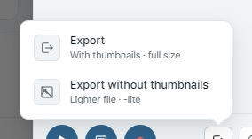
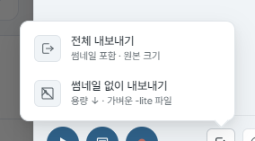
-lite file. Both replay and import the same.-lite 파일. 둘 다 재생·불러오기는 동일합니다.Import from the popup
팝업에서 바로 가져오기
Received a JSON walkthrough from a colleague? Click the Manuscript icon to open the popup, then hit ↑ Open a JSON file right below the + New Manuscript button. The picked file is added to your Previous Manuscripts list, and the panel opens on the current tab with that scenario already loaded — one click, ready to replay or edit.
동료에게 JSON 시연 파일을 받았다면? Manuscript 아이콘을 눌러 팝업을 열고 + 새 매뉴스크립트 버튼 바로 아래의 ↑ JSON 파일 가져오기 를 누르세요. 선택한 파일이 이전 매뉴스크립트 목록에 추가되고, 현재 탭에 패널이 열리면서 그 시연이 바로 로드됩니다 — 한 번 클릭으로 재생·편집 준비 완료.


11. Previous Manuscripts
11. 이전 매뉴스크립트
Clicking the extension icon a second time shows the Previous Manuscripts list — every manuscript you've authored. The most recent work is highlighted as Resume — one click puts you back where you left off, on the same page.
확장 아이콘을 다시 클릭하면 이전 매뉴스크립트 목록이 표시됩니다. 가장 최근 작업은 이어하기로 강조되며, 클릭 한 번으로 그 매뉴스크립트로 복귀합니다 (같은 페이지로 자동 이동).